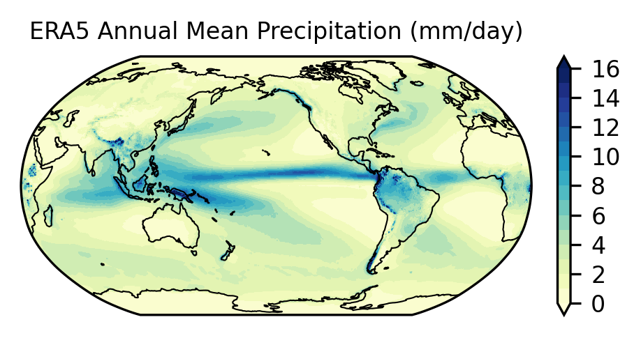
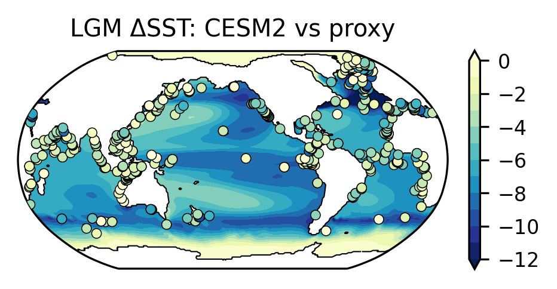

5. More Info: Climate and Model Data Access#
Tutorials at the 2026 paleoCAMP | June 15–June 29, 2026
Jiang Zhu
jiangzhu@ucar.edu
Climate & Global Dynamics Laboratory
NSF National Center for Atmospheric Research
More information and examples to demonstrate data access and analysis
Guidance on using climate data
Access Earth System Model output
NCAR JupyterHub is your
one-stop shopfor data access and analysis!Example 1: Access ERA5 Reanalysis on NSF NCAR’s Research Data Archive
Example 2: Access CESM output on NCAR’s Campaign Storage and perform model-data comparison
Time to learn: 15 minutes
Guidance on using climate data#
NCAR Climate Data Guide: Key strengths, Key limitations, Expert User Guidance, etc.
Paleoclimate (You could contribute!)
…
Access ESM output#
Earth System Grid Federation (ESGF), e.g., the LLNL Node
NSF NCAR Geoscience Data Exchange: e.g., ERA5 Reanalysis (1.77 PB!) and iTRACE
CESM Paleoclimate Working Group webpage
Other portals, such as the DeepMIP Model Database
NCAR JupyterHub is your one-stop shop for data access and analysis!#
Multiple PB of CESM Paleoclimate simulation data
Other CESM simulation data
Preinstalled Python environment
Available recipes and examples
Note: variable names may be different depending on the portals (IPCC Standard; CESM Standard)
Load Python packages
import os
import glob
from datetime import timedelta
import xarray as xr
import numpy as np
import pandas as pd
import matplotlib as mpl
import matplotlib.pyplot as plt
import cartopy.crs as ccrs
from cartopy.util import add_cyclic_point
# xesmf is used for regridding ocean output
import xesmf
import warnings
warnings.filterwarnings("ignore")
Example 1: Access ERA5 Reanalysis data on NSF NCAR’s Geoscience Data Exchange (GDEX)#
Browse the GDEX website and figure out the file structure
Search
era5Click the
Monthly Meanproduct (d633001)Click the tab
DATA ACCESSTotal precipitation is in
ERA5 monthly mean atmospheric surface forecast (accumulated) [netCDF4]Click
GLADE File Listingto see all the files stored on the NCAR Campaign Storage
Or, you could follow the GDEX usage examples to use
intake-esm
data_dir = '/glade/campaign/collections/rda/data/d633001/e5.moda.fc.sfc.accumu/'
files_tp = glob.glob(data_dir + '*/*_tp.*.nc')
print(*sorted(files_tp), sep='\n')
/glade/campaign/collections/rda/data/d633001/e5.moda.fc.sfc.accumu/1979/e5.moda.fc.sfc.accumu.128_228_tp.ll025sc.1979010100_1979120100.nc
/glade/campaign/collections/rda/data/d633001/e5.moda.fc.sfc.accumu/1980/e5.moda.fc.sfc.accumu.128_228_tp.ll025sc.1980010100_1980120100.nc
/glade/campaign/collections/rda/data/d633001/e5.moda.fc.sfc.accumu/1981/e5.moda.fc.sfc.accumu.128_228_tp.ll025sc.1981010100_1981120100.nc
/glade/campaign/collections/rda/data/d633001/e5.moda.fc.sfc.accumu/1982/e5.moda.fc.sfc.accumu.128_228_tp.ll025sc.1982010100_1982120100.nc
/glade/campaign/collections/rda/data/d633001/e5.moda.fc.sfc.accumu/1983/e5.moda.fc.sfc.accumu.128_228_tp.ll025sc.1983010100_1983120100.nc
/glade/campaign/collections/rda/data/d633001/e5.moda.fc.sfc.accumu/1984/e5.moda.fc.sfc.accumu.128_228_tp.ll025sc.1984010100_1984120100.nc
/glade/campaign/collections/rda/data/d633001/e5.moda.fc.sfc.accumu/1985/e5.moda.fc.sfc.accumu.128_228_tp.ll025sc.1985010100_1985120100.nc
/glade/campaign/collections/rda/data/d633001/e5.moda.fc.sfc.accumu/1986/e5.moda.fc.sfc.accumu.128_228_tp.ll025sc.1986010100_1986120100.nc
/glade/campaign/collections/rda/data/d633001/e5.moda.fc.sfc.accumu/1987/e5.moda.fc.sfc.accumu.128_228_tp.ll025sc.1987010100_1987120100.nc
/glade/campaign/collections/rda/data/d633001/e5.moda.fc.sfc.accumu/1988/e5.moda.fc.sfc.accumu.128_228_tp.ll025sc.1988010100_1988120100.nc
/glade/campaign/collections/rda/data/d633001/e5.moda.fc.sfc.accumu/1989/e5.moda.fc.sfc.accumu.128_228_tp.ll025sc.1989010100_1989120100.nc
/glade/campaign/collections/rda/data/d633001/e5.moda.fc.sfc.accumu/1990/e5.moda.fc.sfc.accumu.128_228_tp.ll025sc.1990010100_1990120100.nc
/glade/campaign/collections/rda/data/d633001/e5.moda.fc.sfc.accumu/1991/e5.moda.fc.sfc.accumu.128_228_tp.ll025sc.1991010100_1991120100.nc
/glade/campaign/collections/rda/data/d633001/e5.moda.fc.sfc.accumu/1992/e5.moda.fc.sfc.accumu.128_228_tp.ll025sc.1992010100_1992120100.nc
/glade/campaign/collections/rda/data/d633001/e5.moda.fc.sfc.accumu/1993/e5.moda.fc.sfc.accumu.128_228_tp.ll025sc.1993010100_1993120100.nc
/glade/campaign/collections/rda/data/d633001/e5.moda.fc.sfc.accumu/1994/e5.moda.fc.sfc.accumu.128_228_tp.ll025sc.1994010100_1994120100.nc
/glade/campaign/collections/rda/data/d633001/e5.moda.fc.sfc.accumu/1995/e5.moda.fc.sfc.accumu.128_228_tp.ll025sc.1995010100_1995120100.nc
/glade/campaign/collections/rda/data/d633001/e5.moda.fc.sfc.accumu/1996/e5.moda.fc.sfc.accumu.128_228_tp.ll025sc.1996010100_1996120100.nc
/glade/campaign/collections/rda/data/d633001/e5.moda.fc.sfc.accumu/1997/e5.moda.fc.sfc.accumu.128_228_tp.ll025sc.1997010100_1997120100.nc
/glade/campaign/collections/rda/data/d633001/e5.moda.fc.sfc.accumu/1998/e5.moda.fc.sfc.accumu.128_228_tp.ll025sc.1998010100_1998120100.nc
/glade/campaign/collections/rda/data/d633001/e5.moda.fc.sfc.accumu/1999/e5.moda.fc.sfc.accumu.128_228_tp.ll025sc.1999010100_1999120100.nc
/glade/campaign/collections/rda/data/d633001/e5.moda.fc.sfc.accumu/2000/e5.moda.fc.sfc.accumu.128_228_tp.ll025sc.2000010100_2000120100.nc
/glade/campaign/collections/rda/data/d633001/e5.moda.fc.sfc.accumu/2001/e5.moda.fc.sfc.accumu.128_228_tp.ll025sc.2001010100_2001120100.nc
/glade/campaign/collections/rda/data/d633001/e5.moda.fc.sfc.accumu/2002/e5.moda.fc.sfc.accumu.128_228_tp.ll025sc.2002010100_2002120100.nc
/glade/campaign/collections/rda/data/d633001/e5.moda.fc.sfc.accumu/2003/e5.moda.fc.sfc.accumu.128_228_tp.ll025sc.2003010100_2003120100.nc
/glade/campaign/collections/rda/data/d633001/e5.moda.fc.sfc.accumu/2004/e5.moda.fc.sfc.accumu.128_228_tp.ll025sc.2004010100_2004120100.nc
/glade/campaign/collections/rda/data/d633001/e5.moda.fc.sfc.accumu/2005/e5.moda.fc.sfc.accumu.128_228_tp.ll025sc.2005010100_2005120100.nc
/glade/campaign/collections/rda/data/d633001/e5.moda.fc.sfc.accumu/2006/e5.moda.fc.sfc.accumu.128_228_tp.ll025sc.2006010100_2006120100.nc
/glade/campaign/collections/rda/data/d633001/e5.moda.fc.sfc.accumu/2007/e5.moda.fc.sfc.accumu.128_228_tp.ll025sc.2007010100_2007120100.nc
/glade/campaign/collections/rda/data/d633001/e5.moda.fc.sfc.accumu/2008/e5.moda.fc.sfc.accumu.128_228_tp.ll025sc.2008010100_2008120100.nc
/glade/campaign/collections/rda/data/d633001/e5.moda.fc.sfc.accumu/2009/e5.moda.fc.sfc.accumu.128_228_tp.ll025sc.2009010100_2009120100.nc
/glade/campaign/collections/rda/data/d633001/e5.moda.fc.sfc.accumu/2010/e5.moda.fc.sfc.accumu.128_228_tp.ll025sc.2010010100_2010120100.nc
/glade/campaign/collections/rda/data/d633001/e5.moda.fc.sfc.accumu/2011/e5.moda.fc.sfc.accumu.128_228_tp.ll025sc.2011010100_2011120100.nc
/glade/campaign/collections/rda/data/d633001/e5.moda.fc.sfc.accumu/2012/e5.moda.fc.sfc.accumu.128_228_tp.ll025sc.2012010100_2012120100.nc
/glade/campaign/collections/rda/data/d633001/e5.moda.fc.sfc.accumu/2013/e5.moda.fc.sfc.accumu.128_228_tp.ll025sc.2013010100_2013120100.nc
/glade/campaign/collections/rda/data/d633001/e5.moda.fc.sfc.accumu/2014/e5.moda.fc.sfc.accumu.128_228_tp.ll025sc.2014010100_2014120100.nc
/glade/campaign/collections/rda/data/d633001/e5.moda.fc.sfc.accumu/2015/e5.moda.fc.sfc.accumu.128_228_tp.ll025sc.2015010100_2015120100.nc
/glade/campaign/collections/rda/data/d633001/e5.moda.fc.sfc.accumu/2016/e5.moda.fc.sfc.accumu.128_228_tp.ll025sc.2016010100_2016120100.nc
/glade/campaign/collections/rda/data/d633001/e5.moda.fc.sfc.accumu/2017/e5.moda.fc.sfc.accumu.128_228_tp.ll025sc.2017010100_2017120100.nc
/glade/campaign/collections/rda/data/d633001/e5.moda.fc.sfc.accumu/2018/e5.moda.fc.sfc.accumu.128_228_tp.ll025sc.2018010100_2018120100.nc
/glade/campaign/collections/rda/data/d633001/e5.moda.fc.sfc.accumu/2019/e5.moda.fc.sfc.accumu.128_228_tp.ll025sc.2019010100_2019120100.nc
/glade/campaign/collections/rda/data/d633001/e5.moda.fc.sfc.accumu/2020/e5.moda.fc.sfc.accumu.128_228_tp.ll025sc.2020010100_2020120100.nc
/glade/campaign/collections/rda/data/d633001/e5.moda.fc.sfc.accumu/2021/e5.moda.fc.sfc.accumu.128_228_tp.ll025sc.2021010100_2021120100.nc
/glade/campaign/collections/rda/data/d633001/e5.moda.fc.sfc.accumu/2022/e5.moda.fc.sfc.accumu.128_228_tp.ll025sc.2022010100_2022120100.nc
ds = xr.open_mfdataset(files_tp)
ds = ds.reindex(latitude=sorted(ds.latitude.values))
ds
<xarray.Dataset> Size: 2GB
Dimensions: (latitude: 721, longitude: 1440, time: 528)
Coordinates:
* latitude (latitude) float64 6kB -90.0 -89.75 -89.5 ... 89.5 89.75 90.0
* longitude (longitude) float64 12kB 0.0 0.25 0.5 0.75 ... 359.2 359.5 359.8
* time (time) datetime64[ns] 4kB 1979-01-01 1979-02-01 ... 2022-12-01
Data variables:
TP (time, latitude, longitude) float32 2GB dask.array<chunksize=(3, 360, 776), meta=np.ndarray>
utc_date (time) int32 2kB dask.array<chunksize=(12,), meta=np.ndarray>
Attributes:
DATA_SOURCE: ECMWF: https://cds.climate.copernicus.eu, Copernicu...
NETCDF_CONVERSION: CISL RDA: Conversion from ECMWF GRIB 1 data to netC...
NETCDF_VERSION: 4.6.1
CONVERSION_PLATFORM: Linux casper02 3.10.0-693.21.1.el7.x86_64 #1 SMP We...
CONVERSION_DATE: Mon Nov 11 08:45:33 MST 2019
Conventions: CF-1.6
NETCDF_COMPRESSION: NCO: Precision-preserving compression to netCDF4/HD...
history: Mon Nov 11 08:45:34 2019: ncks -4 --ppc default=7 e...
NCO: netCDF Operators version 4.7.9 (Homepage = http://n...Change the units from m per day to mm per day and make a plot#
See here for clarification of units.
tp = ds.TP.mean('time') * 1000.0
tp = tp.compute()
tp
<xarray.DataArray 'TP' (latitude: 721, longitude: 1440)> Size: 4MB
array([[0.18871191, 0.18871191, 0.18871191, ..., 0.18871191, 0.18871191,
0.18871191],
[0.1763593 , 0.17630874, 0.17631234, ..., 0.17640808, 0.17640086,
0.17640446],
[0.17613353, 0.17612088, 0.17608838, ..., 0.17611367, 0.17612632,
0.17613533],
...,
[0.6987416 , 0.69886446, 0.6989421 , ..., 0.6986495 , 0.69864047,
0.69868386],
[0.7080526 , 0.7081086 , 0.70814294, ..., 0.70803094, 0.7080472 ,
0.70808154],
[0.7012306 , 0.7012306 , 0.7012306 , ..., 0.7012306 , 0.7012306 ,
0.7012306 ]], shape=(721, 1440), dtype=float32)
Coordinates:
* latitude (latitude) float64 6kB -90.0 -89.75 -89.5 ... 89.5 89.75 90.0
* longitude (longitude) float64 12kB 0.0 0.25 0.5 0.75 ... 359.2 359.5 359.8
Attributes: (12/14)
long_name: Total precipitation
short_name: tp
units: m
original_format: WMO GRIB 1 with ECMWF local table
ecmwf_local_table: 128
ecmwf_parameter: 228
... ...
grid_specification: 0.25 degree x 0.25 degree from 90N to 90S ...
rda_dataset: ds633.1
rda_dataset_url: https:/rda.ucar.edu/datasets/ds633.1/
rda_dataset_doi: DOI: 10.5065/P8GT-0R61
rda_dataset_group: ERA5 monthly mean atmospheric surface fore...
number_of_significant_digits: 7fig, ax = plt.subplots(
nrows=1, ncols=1,
figsize=(3, 1.5),
subplot_kw={'projection': ccrs.Robinson(central_longitude=210)},
constrained_layout=True)
# Plot model results using contourf
p0 = ax.contourf(tp.longitude, tp.latitude, tp,
levels=np.linspace(0, 16, 17),
cmap='YlGnBu', extend='both',
transform=ccrs.PlateCarree())
plt.colorbar(p0, ax=ax)
ax.coastlines(linewidth=0.5)
ax.set_title('ERA5 Annual Mean Precipitation (mm/day)', fontsize=8)
# plt.savefig('./precip_xy.era5.png', format='png', dpi=600, bbox_inches="tight")
Text(0.5, 1.0, 'ERA5 Annual Mean Precipitation (mm/day)')

Example 2: Access CESM paleoclimate output and perform model-data comparison on NCAR’s Campaign Storage#
We try to reproduce Figure 2a of Jiang’s paper to use the LGM ΔSST to assess CESM2’s climate sensitivity.
Whole set of model output is shared at:
/glade/campaign/cesm/community/palwgYou can find additional simulation data here:
/glade/campaign/cgd/ppc/jiangzhuInformation of many CESM paleoclimate simulations is available on the Paleoclimate Working Group website
As of now, prior knowledge of the experiments and file structure is needed. We hope to develop a Simulation Catalog for this!
!ls /glade/campaign/cesm/community/palwg/
ASD_paleoweather iCESM1.2-DeglacialSlice Past1000
cam6_paleo_ppe iTRACE Pliocene
CESM1-LME LastGlacialMaximum set_permission.csh
DECK LastInterglacial storage_use_policy.readme
Eocene Miocene TraCE
Holocene PaleoCalibr WisoMIP
!ls -l /glade/campaign/cesm/community/palwg/LastGlacialMaximum/CESM2
!ls /glade/campaign/cesm/community/palwg/LastGlacialMaximum/CESM2/b.e21.B1850CLM50SP.f09_g17.PI.01/ocn/proc/tseries/month_1/*.TEMP.*
!ls /glade/campaign/cesm/community/palwg/LastGlacialMaximum/CESM2/b.e21.B1850CLM50SP.f09_g17.21ka.01/ocn/proc/tseries/month_1/*.TEMP.*
total 3
drwxr-sr-x+ 7 jiangzhu cesm 4096 Aug 2 2024 b.e21.B1850CLM50SP.f09_g17.21ka.01
drwxr-sr-x+ 8 jiangzhu cesm 4096 Aug 2 2024 b.e21.B1850CLM50SP.f09_g17.PI.01
-rw-r--r--+ 1 jiangzhu cesm 413 Aug 2 2024 please_cite_zhu_etal_2021
/glade/campaign/cesm/community/palwg/LastGlacialMaximum/CESM2/b.e21.B1850CLM50SP.f09_g17.PI.01/ocn/proc/tseries/month_1/b.e21.B1850CLM50SP.f09_g17.PI.01.pop.h.TEMP.000101-010012.nc
/glade/campaign/cesm/community/palwg/LastGlacialMaximum/CESM2/b.e21.B1850CLM50SP.f09_g17.PI.01/ocn/proc/tseries/month_1/b.e21.B1850CLM50SP.f09_g17.PI.01.pop.h.TEMP.010101-020012.nc
/glade/campaign/cesm/community/palwg/LastGlacialMaximum/CESM2/b.e21.B1850CLM50SP.f09_g17.PI.01/ocn/proc/tseries/month_1/b.e21.B1850CLM50SP.f09_g17.PI.01.pop.h.TEMP.020101-030012.nc
/glade/campaign/cesm/community/palwg/LastGlacialMaximum/CESM2/b.e21.B1850CLM50SP.f09_g17.21ka.01/ocn/proc/tseries/month_1/b.e21.B1850CLM50SP.f09_g17.21ka.01.pop.h.TEMP.000101-010012.nc
/glade/campaign/cesm/community/palwg/LastGlacialMaximum/CESM2/b.e21.B1850CLM50SP.f09_g17.21ka.01/ocn/proc/tseries/month_1/b.e21.B1850CLM50SP.f09_g17.21ka.01.pop.h.TEMP.010101-020012.nc
/glade/campaign/cesm/community/palwg/LastGlacialMaximum/CESM2/b.e21.B1850CLM50SP.f09_g17.21ka.01/ocn/proc/tseries/month_1/b.e21.B1850CLM50SP.f09_g17.21ka.01.pop.h.TEMP.020101-030012.nc
/glade/campaign/cesm/community/palwg/LastGlacialMaximum/CESM2/b.e21.B1850CLM50SP.f09_g17.21ka.01/ocn/proc/tseries/month_1/b.e21.B1850CLM50SP.f09_g17.21ka.01.pop.h.TEMP.030101-040012.nc
/glade/campaign/cesm/community/palwg/LastGlacialMaximum/CESM2/b.e21.B1850CLM50SP.f09_g17.21ka.01/ocn/proc/tseries/month_1/b.e21.B1850CLM50SP.f09_g17.21ka.01.pop.h.TEMP.040101-050012.nc
campaign_dir = '/glade/campaign/cesm/community/palwg/LastGlacialMaximum/CESM2'
comp = 'ocn/proc/tseries/month_1'
Read preindustrial SST#
case = 'b.e21.B1850CLM50SP.f09_g17.PI.01'
fname = 'b.e21.B1850CLM50SP.f09_g17.PI.01.pop.h.TEMP.020101-030012.nc'
file = os.path.join(campaign_dir, case, comp, fname)
# Open the file and select the last 10 years of data
ds_pre = xr.open_dataset(file).isel(time=slice(-120, None))
sst_pre = ds_pre.TEMP.isel(z_t=0).mean('time')
sst_pre
<xarray.DataArray 'TEMP' (nlat: 384, nlon: 320)> Size: 492kB
array([[ nan, nan, nan, ..., nan, nan,
nan],
[ nan, nan, nan, ..., nan, nan,
nan],
[-1.9042568, -1.9034731, -1.9024575, ..., nan, nan,
nan],
...,
[ nan, nan, nan, ..., nan, nan,
nan],
[ nan, nan, nan, ..., nan, nan,
nan],
[ nan, nan, nan, ..., nan, nan,
nan]], shape=(384, 320), dtype=float32)
Coordinates:
z_t float32 4B 500.0
ULONG (nlat, nlon) float64 983kB ...
ULAT (nlat, nlon) float64 983kB ...
TLONG (nlat, nlon) float64 983kB ...
TLAT (nlat, nlon) float64 983kB ...
Dimensions without coordinates: nlat, nlon
Attributes:
long_name: Potential Temperature
units: degC
grid_loc: 3111
cell_methods: time: meanRead LGM SST#
case = 'b.e21.B1850CLM50SP.f09_g17.21ka.01'
fname = 'b.e21.B1850CLM50SP.f09_g17.21ka.01.pop.h.TEMP.040101-050012.nc'
file = os.path.join(campaign_dir, case, comp, fname)
# Open the file and select the last 10 years of data
ds_lgm = xr.open_dataset(file).isel(time=slice(-120, None))
sst_lgm = ds_lgm.TEMP.isel(z_t=0).mean('time')
sst_lgm
<xarray.DataArray 'TEMP' (nlat: 384, nlon: 320)> Size: 492kB
array([[nan, nan, nan, ..., nan, nan, nan],
[nan, nan, nan, ..., nan, nan, nan],
[nan, nan, nan, ..., nan, nan, nan],
...,
[nan, nan, nan, ..., nan, nan, nan],
[nan, nan, nan, ..., nan, nan, nan],
[nan, nan, nan, ..., nan, nan, nan]],
shape=(384, 320), dtype=float32)
Coordinates:
z_t float32 4B 500.0
ULONG (nlat, nlon) float64 983kB ...
ULAT (nlat, nlon) float64 983kB ...
TLONG (nlat, nlon) float64 983kB ...
TLAT (nlat, nlon) float64 983kB ...
Dimensions without coordinates: nlat, nlon
Attributes:
long_name: Potential Temperature
units: degC
grid_loc: 3111
cell_methods: time: meanRegrid into the 1° × 1° grid using xesmf#
%%time
ds_pre['lat'] = ds_pre.TLAT
ds_pre['lon'] = ds_pre.TLONG
regridder = xesmf.Regridder(
ds_in=ds_pre,
ds_out=xesmf.util.grid_global(1, 1, cf=True, lon1=360),
method='bilinear',
periodic=True)
dsst_1x1 = regridder(sst_lgm - sst_pre)
dsst_1x1
CPU times: user 4.1 s, sys: 357 ms, total: 4.45 s
Wall time: 4.89 s
<xarray.DataArray (lat: 180, lon: 360)> Size: 259kB
array([[ nan, nan, nan, ..., nan,
nan, nan],
[ nan, nan, nan, ..., nan,
nan, nan],
[ nan, nan, nan, ..., nan,
nan, nan],
...,
[-0.17081444, -0.17075008, -0.17069343, ..., -0.17104828,
-0.17096627, -0.1708865 ],
[-0.178788 , -0.17878205, -0.17877994, ..., -0.17882909,
-0.17881154, -0.17879783],
[-0.18547155, -0.18547687, -0.18548317, ..., -0.18546143,
-0.18546383, -0.1854672 ]], shape=(180, 360), dtype=float32)
Coordinates:
* lat (lat) float64 1kB -89.5 -88.5 -87.5 -86.5 ... 86.5 87.5 88.5 89.5
* lon (lon) float64 3kB 0.5 1.5 2.5 3.5 4.5 ... 356.5 357.5 358.5 359.5
z_t float32 4B 500.0
Attributes:
regrid_method: bilinearRead proxy ΔSST in csv from Jess’s github#
url = 'https://raw.githubusercontent.com/jesstierney/lgmDA/master/proxyData/Tierney2020_ProxyDataPaired.csv'
proxy_dsst = pd.read_csv(url)
proxy_dsst.head()
| Latitude | Longitude | Lower2s | Median | Upper2s | ProxyType | Species | |
|---|---|---|---|---|---|---|---|
| 0 | -55.0 | 73.3 | -2.927296 | -1.379339 | 0.302709 | delo | pachy |
| 1 | -53.0 | -58.0 | 1.426191 | 2.773898 | 4.253553 | uk | NaN |
| 2 | -51.1 | 67.7 | -4.810437 | -3.192364 | -0.570439 | delo | pachy |
| 3 | -48.1 | 146.9 | -4.784523 | -3.370838 | -1.886123 | uk | NaN |
| 4 | -46.1 | 90.1 | -4.949764 | -3.470513 | -1.919271 | delo | bulloides |
Plot the LGM ΔSST in the model and proxy records#
cmap = plt.get_cmap('YlGnBu_r')
norm = mpl.colors.Normalize(-12, 0)
fig, ax = plt.subplots(nrows=1, ncols=1,
figsize=(3, 1.5),
subplot_kw={'projection': ccrs.Robinson(central_longitude=210)},
constrained_layout=True)
# Plot model results using contourf
dsst_1x1_new, lon_new = add_cyclic_point(dsst_1x1, dsst_1x1.lon)
p0 = ax.contourf(lon_new, dsst_1x1.lat, dsst_1x1_new,
levels=np.linspace(-12, 0, 13),
cmap=cmap, norm=norm, extend='both',
transform=ccrs.PlateCarree())
plt.colorbar(p0, ax=ax)
# Create a land-sea mask and plot the LGM coastal line
lmask = xr.where(dsst_1x1.isnull(), 0, 1)
ax.contour(lmask.lon, lmask.lat, lmask,
levels=[0.5],
linewidths=0.5,
colors='black',
transform=ccrs.PlateCarree())
# Plot proxy SST using markers
ax.scatter(proxy_dsst['Longitude'],
proxy_dsst['Latitude'],
c=proxy_dsst['Median'],
marker='o',
s=15,
cmap=cmap,
edgecolors='black',
lw=0.35,
norm=norm,
zorder=3,
transform=ccrs.PlateCarree())
ax.set_title("LGM ΔSST: CESM2 vs proxy")
Text(0.5, 1.0, 'LGM ΔSST: CESM2 vs proxy')
